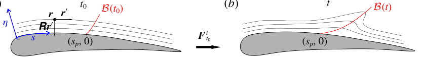
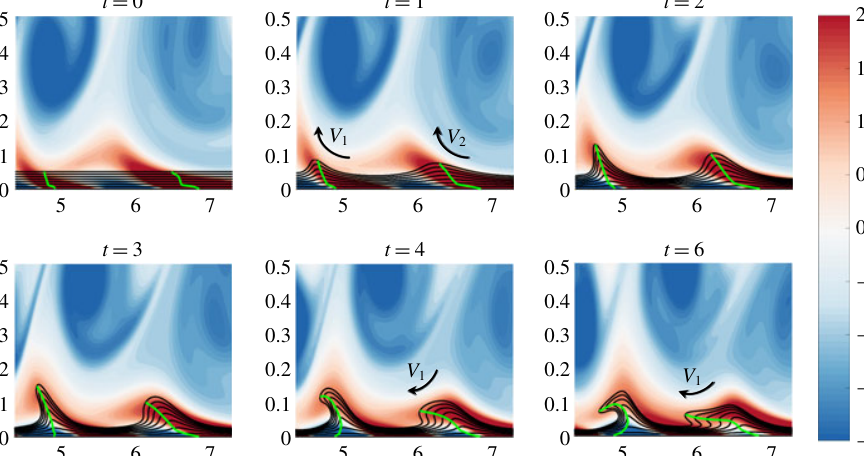
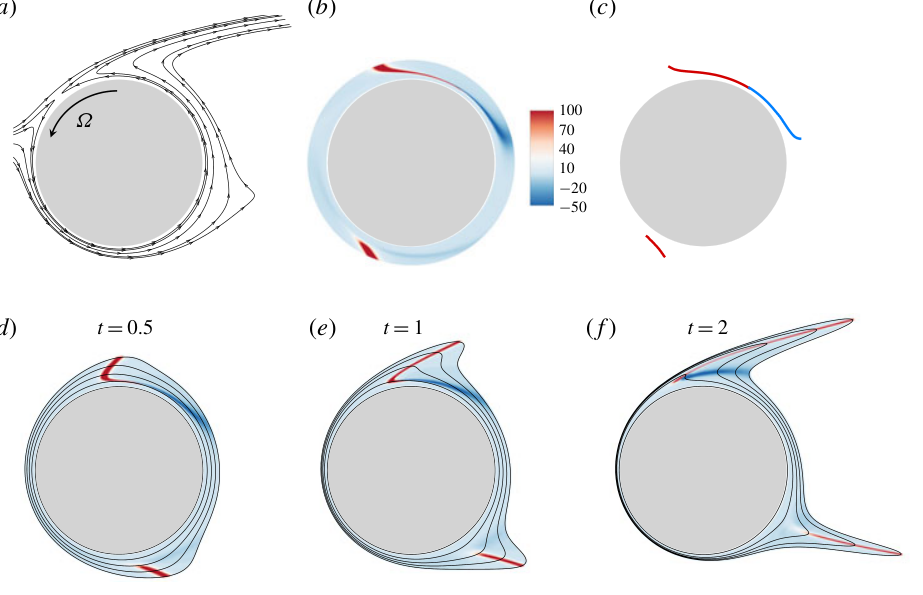
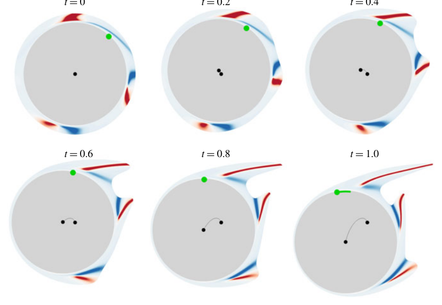

01中文摘要
将近年的帧不变分离尖峰（material spike）形成理论应用于复杂非定常流动，包括湍流分离泡、冲击射流、自由运动圆柱和自由旋转椭圆。该理论不依赖定常、周期或非定常假设，也不区分壁上/离壁、固定/运动边界，能捕捉材料尖峰的起始。研究揭示壁上到离壁分离的转变、初始独立尖峰的合并，以及以往方法看不到的强材料尖峰；即使在弯曲壁面定常流中无流动反向，也能识别材料尖峰。结果展示了尖峰网络如何相互作用、合并并最终把粒子从壁面抛出。
02阅读说明
理论+数值研究（Lagrangian 材料尖峰形成理论在四类不可压分离流动中的应用）。材料为 JFM 883 (2020) A30 全文 27 页，bundle 完整、无截断。式 (2.1)、(2.5) 已回读原 PDF 第 4–5 页核对符号与式号；其余公式、图注与文字取自 bundle。图注 OCR 有个别上下标错位（如 κ 的 t0、T 上下标），已按 §2 定义与 PDF 校正；网格量、时间步长、收敛性指标等数值文中未提及。全文读完。 文章类型：期刊
03一句话核心与三句话摘要
用曲率型材料尖峰理论分析四类不可压分离流动，无先验假设地捕捉分离起始、上壁/离壁转换与尖峰合并。
- 已有分离判据多基于边界层方程奇点、MRS 条件、零壁面剪应力或渐近理论，难以在短时间、强非定常、可出现多个分离位置的流动中定位分离起始。 AI概括
- 作者采用 Serra 等 (2018) 的 Lagrangian 曲率变化场，把壁面横向正曲率脊定义为分离骨架并随流输运，在湍流分离泡、冲击射流、自由平移圆柱和自由旋转椭圆等算例中检验。 AI概括
- 结果表明该理论无需预设分离类型即可捕捉分离尖峰的起始与演化，并揭示上壁到离壁分离的转换、初始独立尖峰的合并，以及无回流条件下被传统方法漏掉的强尖峰。 原文明确
04核心内容清单
| 要点 | 类型 | 重要性 | 原文依据 | 属性 |
|---|---|---|---|---|
| 研究缺口：主流分离判据（边界层奇点、MRS、零剪应力、零流向速度）都面向无限时间渐近剖面，不能在短时间、强非定常流动中定位分离起始。 | 研究背景与缺口 | A | p. A30-2–A30-3 | 原文明确 |
| 理论核心：对不可压缩流，物质线曲率从 κ0 到 κ^t_{t0} 的演化由式 (2.1) 精确给出，右端含 ∇²F、R∇F 与右 Cauchy–Green 张量 C。 | 理论公式 | A | 式 (2.1)–(2.3)，p. A30-4 | 原文明确 |
| 分离骨架 B(t0) 定义为曲率变化场 κ̄^t_{t0} 的壁面横向正脊；B(t)=F^t_{t0}(B(t0))；B(t0) 连壁为上壁分离，否则为离壁分离，连壁交点即尖峰点 sp。 | 理论定义 | A | p. A30-4、图1 | 原文明确 |
| Eulerian 极限 t→t0 由曲率率 κ̇_{t0} 给出（式 (2.4)–(2.5)），曲率变化来自拉伸与旋转的共同作用，涡量梯度项保证客观性。 | 理论公式 | A | 式 (2.4)–(2.5)，p. A30-5 | 原文明确 |
| 层流分离泡中 Lagrangian 尖峰点在 x≈1.4，零壁面剪应力点在 x≈1.8；骨架形状强烈依赖 T，但 sp 几乎不变。 | 算例结果 | A | p. A30-5、图2–4 | 原文明确 |
| 湍流分离泡上游出现四条共存骨架，下游由 V1、V2 两个涡的卷吸形成两条连壁尖峰；V1 对流可使骨架先被压回壁面再弹出。 | 算例结果 | A | p. A30-8–9、图6–9 | 原文明确 |
| 冲击射流第一个涡致分离有两条均连壁的骨架，反驳了以往将其先验视为离壁分离的做法；第二个涡致分离的 κ 量级低两个数量级。 | 算例结果 | A | p. A30-11–14、图12–17 | 原文明确 |
| 第二个涡致分离在 T=2 时上游骨架脱离壁面，理论据此给出上壁分离向离壁分离转换的时间尺度，这是 κ 场拓扑变化给出的、传统判据看不到的结果。 | 新现象 | A | p. A30-13–14、图16–17 | 原文明确 |
| 旋转圆柱下部区域无 Eulerian 鞍点、无回流、速度与壁面剪应力分量均不为零，但 κ 场仍给出强分离脊，末端距壁约 0.03D，属 LCS 方法漏掉的“隐藏”强尖峰。 | 新现象 | A | p. A30-16–17、图20 | 原文明确 |
| 自由平移圆柱 Re=100 时出现三个材料尖峰，却只有一个 Prandtl 点；Haller (2004) 的移动分离理论只检测到其中一个分离。 | 对比结果 | A | p. A30-17–19、图21–22 | 原文明确 |
| 自由旋转椭圆测试例 1 与 2 分别检出三条和四条骨架，后部骨架可合并；演化中 Prandtl 点数目在 1–3 之间变化，说明流线图与 Lagrangian 分离不相关。 | 算例结果 | B | p. A30-20–23、图25–27 | 原文明确 |
| 作者结论：经典“单一分离点”概念对强非定常流过于局限，分离可在多个位置起始并合并；理论是运动学的，只给出几何与时间尺度，不含力。 | 结论与局限 | B | p. A30-23–24 | AI概括 |
05引言：研究问题与领域缺口
分离广泛存在于扩压器、叶轮机械、压气机、换热器、燃烧室以及翼型/建筑等内外流中，是 Prandtl (1904) 以来的经典问题（p. A30-1–A30-2）。作者回顾了主流判据：以边界层方程奇点检测分离（Sears & Telionis 1975；van Dommelen & Shen 1982），但存在“有奇点无分离、有分离无奇点”的反例，三阶边界层理论（triple-deck）也只适用于 Re→∞；MRS 判据同样受渐近限制（p. A30-2）。动力系统方法把分离剖面看作壁面非双曲不动点的不稳定流形（Shariff 等 1991；Yuster & Hackborn 1997），Haller (2004) 进一步区分固定分离与移动分离，并用于实验与三维流动（p. A30-2）。作者批评大量文献仍用 Prandtl 点、瞬时零剪应力、零流向速度、前向流动比例阈值等检测分离，尽管 Sears & Telionis 早已指出“零壁面剪应力在非定常流中并不表示任何有意义的分离”（p. A30-2）。这些方法共同的局限是：都以无限长时间渐近的分离剖面为目标，而流动控制关心的是短时间内的分离起始（p. A30-3）。Serra 等 (2018) 提出基于“材料尖峰”的曲率理论：分离是壁面附近流体层在喷出前发生的尖峰状折转，可用初始平行于壁面的物质线曲率演化来描述，并给出二维可压缩/不可压缩、任意时间依赖的显式无坐标系公式（p. A30-3）。但该文只处理了低 Reynolds 数、孤立分离结构的算例。本文目标是在更高 Reynolds 数、更复杂的流动中验证该理论，并揭示多尖峰共存、相互作用与合并等新现象（p. A30-3）。
06流动条件与几何构型
| 项目 | 数值/描述 | 依据 | 备注 |
|---|---|---|---|
| 算例 1：层流分离泡（§3.1） | 二维不可压缩；计算域 8h×2h（h 为槽半高，x/y 以 h 无量纲化）；下壁 y=0 无滑移，上壁 y=2 给定速度型诱导逆压梯度；出口对流边界；入口 Blasius 剖面；准定常分离约在 x≈1.5 | p. A30-7、图5a | Reynolds 数文中未提及 |
| 算例 2：湍流分离泡（§3.1–3.2） | 三维槽道预计算 Re=Uh/ν=5000（U 为体平均速度，h 为半高）；流向周期；存储速度场作为二维分离泡计算的时间依赖入口；二维计算但呈混沌行为 | p. A30-7、图5b | “turbulent”指混沌行为，不是三维湍流解析 |
| 算例 3：轴对称冲击射流（§4.1） | Re=UD/ν=1000（D 为喷嘴直径，U 为射流速度）；喷嘴到壁面距离 4D；射流自上而下，对称轴 x=0；出口双曲正切速度型；上下壁无滑移；x/y 以 D 无量纲化 | p. A30-9、图11 | |
| 算例 4：定常旋转圆柱（§5） | Re=UD/ν=50（U 为均匀来流，D 为圆柱直径）；恒定转速 Ω=1；物面无滑移，上下自由滑移，出口无应力 | p. A30-15–16、图20 | |
| 算例 5：自由平移圆柱（§5.1） | Re=UD/ν=100；无质量圆柱，固定旋转、在 x/y 方向自由平动；含结构刚度与阻尼；N-S 与运动方程全耦合；来流沿 x 增大方向 | p. A30-17、图21–22 | |
| 算例 6：自由旋转椭圆（§5.2） | Re=UD/ν=1000；长轴 D=1、短轴 d=0.5；转轴在质心沿长轴上游 D/4 处；单自由度角运动，含扭转刚度与阻尼；初始静止，t≈5 来流达定常，t=20 起间歇旋转 | p. A30-20、图24 | D 为长轴长度并作为 Reynolds 数参考长度 |
| 流体物性/压缩性 | 不可压缩 Newton 流体，运动学粘度 ν；无温度、可压缩性、激波 | p. A30-3–4、p. A30-7 | 全文不涉及高速/可压缩流动 |
| 边界类型 | 固定 no-slip 壁（分离泡、射流、定常旋转圆柱）与运动壁（平移圆柱、旋转椭圆）均有；理论对固定/运动边界不作预设 | p. A30-1、p. A30-4、§5 | |
| 网格/时间步 | 文中未提及网格量、时间步长与收敛性指标；仅说明物体周围为 P2/P1 四边形非结构网格、BDF2 自适应时间步（§5） | p. A30-15；全文 | |
| 实验对照 | 无本文实验；仅引用他人实验/数值结果作定性比较（Lamarche-Gagnon & Vétel 2018 等） | p. A30-11；全文 |
07核心现象与关键参数
| 参数 | 定义 | 数值 | 关系/说明 | 依据 |
|---|---|---|---|---|
| Re（层流分离泡） | 文中未给出 | 文中未提及 | 入口 Blasius 剖面、上壁驱动 | p. A30-7 |
| Re（湍流分离泡） | Re=Uh/ν，U 为体平均速度，h 为槽半高 | 5000 | 三维槽道预计算，再作二维时间依赖入口 | p. A30-7 |
| Re（冲击射流） | Re=UD/ν，D 为喷嘴直径，U 为射流速度 | 1000 | 喷嘴到壁面距离 4D | p. A30-9 |
| Re（旋转圆柱） | Re=UD/ν，D 为圆柱直径 | 50 | Ω=1 | p. A30-16 |
| Re（自由平移圆柱） | Re=UD/ν | 100 | 固定旋转、自由平动 | p. A30-17 |
| Re（自由旋转椭圆） | Re=UD/ν，D 为长轴 | 1000 | D=1，d=0.5，转轴距质心 D/4 | p. A30-20 |
| 尖峰点与 Prandtl 点偏移 | 层流分离泡中 Lagrangian 尖峰点 sp 与零壁面剪应力点的流向位置 | sp 在 x≈1.4；零剪应力点在 x≈1.8 | 骨架揭示瞬时流线看不到的信息 | p. A30-5、图2 |
| 积分时间 T | 计算 κ^t_{t0} 的时间间隔，t=t0+T | 层流泡 1.6/3.2/4.8；湍流泡 6 与 5；冲击射流 1、2、6、12；旋转椭圆 0.8（t0=60）、1.0（t0=69.8）、1.2（t0=79） | T 越大尖峰越尖；T 也控制上壁/离壁判断 | 图2、图6、图8、图12、图16、图18、图25–27 |
| 骨架数量 | 同一时刻由 κ 场提取的 Lagrangian 分离骨架条数 | 层流泡 1；湍流泡上游 4、下游 2；射流涡致分离各 2、固定分离 1；旋转圆柱 2（上、下）；平移圆柱 3（后合并为 2）；旋转椭圆 3 或 4 | 多尖峰可共存、相互作用并合并 | p. A30-8–23 |
| 离壁距离 | 旋转圆柱分离骨架末端到壁面的法向距离 | 约 0.03D | 上、下两处离壁分离 | p. A30-16 |
| κ 量级对比 | 冲击射流第二个涡致分离与第一个的曲率变化量级 | 低两个数量级 | 解释第二个尖峰较钝、颗粒喷出较弱 | p. A30-12 |
| Prandtl 点数量 | 壁面零剪应力点个数 | 平移圆柱 t=0 时 1 个（对应 3 个尖峰）；t∈[1,2] 时 2 个；旋转椭圆演化中 1–3 个 | 与 Lagrangian 分离数目无对应关系 | p. A30-18–22、图22–26 |
08方法与数据
理论部分（§2）采用 Serra 等 (2018) 的结果：以弧长 s 参数化物质线 γ，流映射 F^t_{t0} 由速度场积分得到；对不可压缩流，物质线曲率从 κ0 演化到 κ^t_{t0} 由式 (2.1) 精确给出，其中 C^t_{t0}=[∇F]^T∇F 为右 Cauchy–Green 应变张量，R 为旋转矩阵（p. A30-4）。用一组初始平行于壁面的物质线对近壁区做叶状分层（坐标 [s,η]），曲率变化 κ̄^t_{t0}=κ^t_{t0}−κ0 成为 t0、t 和初始位置的函数；其壁面横向正脊定义为 Lagrangian 分离骨架 B(t0)，随后按 B(t)=F^t_{t0}(B(t0)) 物质输运（p. A30-4，图1）。若 B(t0) 与壁面相连则为上壁分离，否则为离壁分离；上壁情形下 B(t0) 与壁面的交点定义为 Lagrangian 尖峰点 sp（p. A30-4）。t→t0 的瞬时极限给出 Eulerian 骨架 B_E(t) 与 Eulerian 尖峰点 sp_E，可通过曲率率 κ̇_{t0}（式 (2.4)）和式 (2.5) 计算（p. A30-5）。算例一为二维层流分离泡：计算域 8h×2h（h 为槽半高），下壁无滑移，上壁给定速度型诱导逆压梯度，出口为对流边界，用 Incompact3d 二维版求解不可压缩 N-S，入口为 Blasius 剖面（p. A30-7，图5a）。算例二为“湍流分离泡”：先用 Incompact3d 三维版在 Re=Uh/ν=5000（U 为体平均速度）下算充分发展槽道流，再把存储的速度场作为二维分离泡计算的时间依赖入口；流动虽为二维但呈混沌行为（p. A30-7）。算例三为轴对称冲击射流：FreeFem++ 求解不可压缩 N-S，Re=UD/ν=1000（D 为喷嘴直径），喷嘴到壁面距离 4D，射流自上而下，出口为双曲正切速度型，上下壁无滑移（p. A30-9，图11）。算例四为绕圆柱流动：§5 使用自研有限元程序，物体周围为四边形单元上的 P2/P1 非结构网格，二阶 BDF 自适应时间步；边界为物面无滑移、上下自由滑移、出口无应力（p. A30-15）。其中定常旋转圆柱 Re=UD/ν=50、Ω=1（p. A30-16）；自由平移圆柱 Re=100，无质量、固定旋转但可在 x/y 方向平动，结构含刚度与阻尼，与 N-S 方程全耦合（p. A30-17）；自由旋转椭圆 Re=1000，长轴 D=1、短轴 d=0.5，转轴位于质心沿长轴上游 D/4 处，含扭转刚度与阻尼，单自由度角运动与 N-S 全耦合（p. A30-20）。所有算例均为二维不可压缩；网格量、时间步长与收敛性指标文中未提及。
| 项目 | 内容 | 依据 | 备注 |
|---|---|---|---|
| 理论框架 | Serra 等 (2018) 的材料尖峰形成理论：物质线曲率演化式 (2.1)、曲率率式 (2.5)、骨架与尖峰点定义 | §2，p. A30-3–5 | 本文只汇总，不重新推导 |
| 流映射 | F^t_{t0}(x0)=x0+∫_{t0}^{t} v(F^τ_{t0}(x0),τ)dτ；C=[∇F]^T∇F | 式 (2.2)–(2.3)，p. A30-4 | |
| 骨架提取 | 在初始平行于壁面的物质线叶状分层上计算 κ̄^t_{t0}，取壁面横向正脊为 B(t0)，再物质输运得 B(t) | p. A30-4、图1 | 连壁判据给出上壁/离壁分离，连壁交点为 sp |
| Eulerian 极限 | t→t0 时用 κ̇_{t0} 替代 κ̄，得到 B_E(t) 与 sp_E；稳态时 sp≡sp_E | 式 (2.4)–(2.5)，p. A30-5 | |
| 数值程序 1 | Incompact3d 二维/三维版，有限差分求解不可压缩 N-S；三维槽道预计算提供时间依赖入口 | p. A30-7 | 算例 1、2 |
| 数值程序 2 | FreeFem++ 有限元求解轴对称不可压缩 N-S | p. A30-9 | 算例 3 |
| 数值程序 3 | 自研有限元程序，物体周围四边形单元 P2/P1 非结构网格，二阶 BDF 自适应时间步 | p. A30-15 | 算例 4–6 |
| 流固耦合 | N-S 与刚体运动方程同时求解：平移圆柱含 x/y 两自由度结构刚度/阻尼与接触力；椭圆含单自由度角运动、扭转刚度/阻尼与相对转轴的力矩 | p. A30-17、p. A30-20 | 分别参考 Gsell 等 (2016) 与 Weymouth (2014) 的模拟设置 |
| 边界条件 | 分离泡：下壁无滑移、上壁给定速度、出口对流；射流：上下壁无滑移、出口 tanh 速度型；圆柱/椭圆：物面无滑移、上下自由滑移、出口无应力 | p. A30-7、p. A30-9、p. A30-15 | |
| t0 与 T 的选择 | 一般非定常流中骨架依赖 t0 与 T；主动控制宜取移动窗口 [t0−Tc,t0]；研究上壁/离壁动力学宜固定 t0、扫描 T | Appendix A，p. A30-24–25 | |
| 验证/不确定度 | 无网格无关性、数值误差或实验不确定度分析；仅与他人结果作定性/现象级比较 | 全文 | 作者未声称定量验证 |
09核心推导与公式
把分离看作近壁物质线在有限时间内被折成壁面横向尖峰的运动学过程：用流映射把初始平行于壁面的物质线映射到当前时刻，精确计算其曲率变化；曲率变化场中沿壁面法向的局部极大（壁面横向正脊）就是分离骨架，骨架随流输运即尖峰中心线；骨架是否连壁给出上壁/离壁分类，连壁交点即分离起始的尖峰点。
关键假设
- 二维不可压缩流动，速度场充分光滑，流映射 F^t_{t0} 为微分同胚
- 无滑移边界；近壁区可由一组初始平行于壁面的物质线叶状分层参数化，采用弧长参数化
- 流动时间依赖任意（定常、周期、非定常均可），不预设分离类型（上壁/离壁）
- 曲率演化公式 (2.1) 与曲率率公式 (2.5) 直接取自 Serra 等 (2018)，本文不重新推导
- 骨架与尖峰点被认为是结构稳定的，但近壁信噪比低时对噪声更敏感
- t0 与 T 需按分析目的选择；不同 (t0,T) 给出不同骨架，只有稳态/周期流在 T→∞ 时收敛
推导过程
以弧长 s 参数化物质线 γ：r(s)，s∈[s1,s2]。流映射 F^t_{t0} 把初始时刻 t0 的质点 x0 映到 t 时刻位置，由速度场沿轨迹积分定义；其梯度 ∇F 描述物质线的局部拉伸与旋转。
对不可压缩流，初始曲率 κ0 的物质线在 t 时刻的曲率 κ^t_{t0} 由式 (2.1) 给出：第一项是流映射二阶导数与旋转后切向量的内积，第二项是初始曲率被拉伸因子 ⟨r′,Cr′⟩^{3/2} 缩放。C 为右 Cauchy–Green 应变张量，R 为 90° 旋转矩阵。
在由初始平行于壁面的物质线构成的 [s,η] 叶状分层上计算曲率变化 κ̄^t_{t0}=κ^t_{t0}−κ0，它只依赖 t0、t 与初始位置。把 κ̄^t_{t0} 沿壁面横向的正脊（对壁面平行方向取局部极大）定义为 Lagrangian 分离骨架 B(t0)；骨架随流输运得到当前时刻位置 B(t)=F^t_{t0}(B(t0))，即正在形成的尖峰的理论中心线。
若 B(t0) 与壁面相连，则为上壁分离，否则为离壁分离；上壁情形下 B(t0) 与壁面的交点定义为 Lagrangian 尖峰点 sp，它给出尖峰形成在壁面上的印记。该分类是结果而不是输入，无需事先假设分离类型。
令 t→t0，得到 Eulerian 骨架 B_E(t) 与 Eulerian 尖峰点 sp_E。把式 (2.1) 对时间求导并在 t=t0 取值，得到材料线曲率率式 (2.5)：第一项为拉伸与旋转的贡献，第二项含涡量梯度 ∇ω（客观量），第三项为初始曲率与应变率张量 S 的耦合。
若流动定常、时间周期或具有有限渐近均值，Lagrangian 尖峰点在 T→∞ 时收敛到确定位置；稳态时 Lagrangian 与 Eulerian 骨架/尖峰点重合（sp≡sp_E）。一般非定常流中骨架同时依赖 t0 与 T，这一依赖性正好用来描述尖峰从生成到充分发展的演化。
对没有确定均值的流动，Haller (2004) 用有限时间窗口内壁面剪摩擦反向积分零点 γ_eff 的上、下确界 γ± 构造移动分离点 γ(t0)。本文用它作为对照，说明该渐近/有限时间判据只能检测多个尖峰中的一个。
适用边界：理论是二维不可压缩的运动学描述：不含动量方程、力和能量传递，不能解释分离的动力学原因；不适用于三维、可压缩、高速/激波主导的流动；κ̄ 场需要速度梯度，近壁信噪比低时对噪声敏感；骨架依赖 t0 与 T 的选择，非定常流中不存在唯一的“分离点”；式 (2.1)、(2.5) 的正确性继承自 Serra 等 (2018)，本文未独立证明；算例无数值收敛性、网格无关性和定量实验验证。
10结果：主要发现与关键证据
层流分离泡（§2–3）：T=1.6 与 3.2 的 κ̄ 场显示尖峰随积分时间变尖；Lagrangian 尖峰点在 x≈1.4，而零壁面剪应力点（Prandtl 点）在 x≈1.8，说明骨架揭示了瞬时流线看不到的信息（p. A30-5，图2）。T=4.8 时骨架形状强烈依赖 T，但 sp 位置几乎不变；流动略非定常，sp 随 T 有小幅振荡（p. A30-7，图3–4）。湍流分离泡（§3）：上游 x<3 的 κ^6_0 场出现四条共存的 Lagrangian 骨架，每条位于两个零集之间并伴随两条最小有符号曲率线（p. A30-8，图6–7）；下游 x≥3 由大涡主导，κ^5_0 给出两条与壁面相连的骨架，V1、V2 两个顺时针涡的卷吸（负涡量）形成两个材料尖峰；V1 向下游对流后，其旋转方向使骨架在 t≥4 被压回壁面，之后再被弹出（p. A30-8–9，图8–9）。冲击射流（§4）：第一个涡致分离在 T=1 的 κ 场中有两条骨架，随后演化中相互靠近；两条骨架都在壁面有足迹，与以往把该类分离先验视为离壁的做法相反（p. A30-11–12，图12–13）。第二个涡致分离同样有两条连壁骨架，但 κ 量级比第一个低两个数量级，尖峰较钝、颗粒喷出较弱；T=2 时上游骨架不再连壁，说明在更长的积分时间下尖峰由离壁过程主导，理论给出了上壁/离壁转换的时间尺度（p. A30-12–14，图14–17）。固定分离（§4.2）：T=6 与 T=12 的骨架都连壁，sp 几乎不随积分时间变化；B(t) 作为尖峰中心，在准定常区也完全隐藏于流线几何之外（p. A30-14，图18–19）。旋转圆柱（§5）：Re=50、Ω=1 的定常流中，上部存在 Eulerian 鞍点，下部没有鞍点、速度与壁面剪应力分量均不为零，但 κ^2_0 仍给出强脊；上、下两处分离的骨架都是离壁的，末端距壁约 0.03D，其中下部强分离因无 Lagrangian 鞍点而被 LCS 方法漏掉（p. A30-16–17，图20）。自由平移圆柱（§5.1）：Re=100 时 κ^1_0 显示三处分离均连壁；物质输运给出三个鼻状尖峰，而壁面零剪应力点只有一个；Haller (2004) 的移动分离理论在该时刻只能检测到其中一个分离（p. A30-17–19，图21–22）。t∈[1,2] 的 κ^2_1 显示两处分离、两个 Prandtl 点；约 t=1 时图22 中最低的两处分离合并为一处（p. A30-19–20，图23）。自由旋转椭圆（§5.2）：Re=1000，来流于 t≈5 达到定常，t=20 起椭圆无规则间歇旋转；测试例 1（κ^{60.8}_{60}）检出三条骨架，测试例 2（κ^{70.8}_{69.8}）检出四条，后部两条逐渐靠近并在序列末合并；整个演化过程中出现 1–3 个 Prandtl 点（p. A30-20–22，图25–26）。图27 进一步给出旋转反向、四个尖峰同时发展以及多次合并的算例（p. A30-22–23）。
| 发现 | 证据 | 证据类型 | 强度 | 位置 | 属性 |
|---|---|---|---|---|---|
| 层流分离泡中 Lagrangian 尖峰点位于 x≈1.4，而零壁面剪应力点在 x≈1.8；骨架位置随 T 改变，但 sp 几乎不变。 | T=1.6/3.2/4.8 的 κ 场与 B(t0) 提取；图2–4 | 定量对比 | 强 | p. A30-5、p. A30-7、图2–4 | 原文明确 |
| 湍流分离泡上游存在四条共存 Lagrangian 骨架，下游由 V1、V2 两个涡的卷吸形成两条连壁尖峰；V1 对流可使骨架先被压回壁面再重新弹出。 | κ^6_0 与 κ^5_0 场、涡量场与物质线的时间演化；图6–9 | 数值现象 | 强 | p. A30-8–9、图6–9 | 原文明确 |
| 冲击射流第一个涡致分离有两条均在壁面有足迹的骨架，与以往将其先验视为离壁分离的做法相反；第二个涡致分离的 κ 量级低两个数量级。 | κ^1_0 场与 B(t) 演化；图12–15 | 数值现象 | 强 | p. A30-11–13、图12–15 | 原文明确 |
| 第二个涡致分离在 T=2 时上游骨架不再连壁，理论据此给出上壁分离向离壁分离转换的时间尺度；固定分离在 T=6 与 12 时骨架始终连壁、sp 几乎不变。 | 图16–17 与图18–19 的对比 | 新现象/时间尺度 | 强 | p. A30-13–14、图16–19 | 原文明确 |
| 定常旋转圆柱下部区域无 Eulerian 鞍点、无回流、速度与壁面剪应力分量均不为零，但 κ 场仍给出强分离脊，末端距壁约 0.03D，属 LCS 方法漏掉的严重尖峰。 | 图20 的流线、κ^2_0 场、骨架提取与物质输运 | 新现象 | 强 | p. A30-16–17、图20 | 原文明确 |
| 自由平移圆柱 Re=100 时出现三个材料尖峰，但只有一个 Prandtl 点；Haller (2004) 的移动分离理论只能检测到其中一个；t∈[1,2] 时两处最低分离合并。 | 图21–23 的 κ^1_0、κ^2_1 场、三个尖峰与绿色 Prandtl 点/分离点轨迹 | 对比与新现象 | 强 | p. A30-17–20、图21–23 | 原文明确 |
| 自由旋转椭圆测试例 1 与 2 分别检出三条与四条骨架，后部骨架逐渐靠近并合并；整个演化中 Prandtl 点数目在 1–3 之间变化，流线图与 Lagrangian 分离不相关。 | 图25–27 的 κ 场物质输运与合并序列 | 数值现象 | 强 | p. A30-20–23、图25–27 | 原文明确 |
| 经典“单一分离点”概念对强非定常流过于局限：分离可以同时起源于多个位置，初始独立的尖峰可动态合并，最终导致壁面颗粒喷出。 | 上述各算例的骨架数量、合并过程与 Prandtl 点数量对比 | 综合结论 | 中 | p. A30-23、结论 | 原文明确 |
11机制解释与论证链
式 (2.5) 把材料线曲率率分解为拉伸/旋转项、涡量梯度项和应变率–曲率耦合项，说明尖峰的形成是近壁物质线被局部拉伸与旋转共同折转的结果；涡量梯度是客观量，因此骨架不依赖参考系（p. A30-5）。在分离泡和冲击射流中，涡的卷吸把近壁流体向上抽吸，使初始平行于壁面的物质线折成壁面横向尖峰；涡向下游对流时抽吸减弱，骨架可被压回壁面或脱离壁面，从而产生上壁/离壁转换和间歇性（p. A30-8–9、p. A30-13–14）。多个涡可同时作用于不同流向位置，形成多条共存骨架；当两条骨架的尖峰相互靠近时，它们在物质输运中合并为一个分离事件（p. A30-20–23）。由于骨架由曲率场定义，即使没有回流、没有零剪应力点或 Lagrangian 鞍点，只要近壁物质线发生足够强的折转，理论仍能给出分离尖峰（p. A30-16–17）。【AI概括，依据 §2、§3.2、§4.2、§5】
12讨论：结论、贡献与局限
机制上，式 (2.5) 表明材料线曲率变化来自拉伸与旋转的共同作用：−½⟨∇ω,r′⟩ 项把涡量梯度（客观量）引入，使尖峰形成在无坐标系意义下可定义（p. A30-5）。因此，分离不再被看作某个瞬时流线或零剪应力点的属性，而是近壁物质线在有限时间内被折成壁面横向尖峰的过程；骨架是尖峰的“理论中心线”，其壁面足迹给出分离起始位置（p. A30-4–5）。在湍流分离泡和冲击射流中，涡的卷吸把近壁流体向上抽吸，骨架随涡运动并可能被压回或重新弹出，这解释了尖峰的间歇性与多尖峰共存（p. A30-8–9、A30-12–14）。上壁/离壁转换不是预先假设，而是 κ 场拓扑随 T 变化的结果；当涡向下游对流、对近壁的抽吸减弱时，尖峰脱离壁面（p. A30-13–14）。作者强调，经典“单一分离点”概念对强非定常流过于局限，分离可在多个位置同时起始，且初始独立的尖峰可合并（p. A30-23）。局限：理论是纯运动学的，只描述物质线几何，不含动量/力信息；只处理二维不可压缩流，未涉及可压缩性、三维结构、湍流建模；需要速度梯度场，近壁信噪比低时对噪声敏感；t0 与 T 的选择依赖分析目的，不同组合给出不同骨架（Appendix A，p. A30-24–25）；本文没有网格无关性、数值误差或与定量实验数据的系统对比。作者提出的未来工作是研究骨架上的力（kinetics）、用 κ 场拓扑量化骨架稳定性并预测上/离壁转换或合并，以及把尖峰点用于流动控制（p. A30-23–24）。
作者结论
作者在四类复杂二维非定常/运动边界流动中检验了材料尖峰形成理论，成功提取 Lagrangian 与 Eulerian 分离骨架。与以往渐近方法不同，该方法可在短时间甚至瞬时捕捉分离尖峰从生成到充分发展的过程，并能给出上壁→离壁转换的时间尺度以及初始独立尖峰的合并过程。作者强调，即使在没有回流、没有零剪应力的定常曲壁流动中，也存在传统判据看不到的强材料尖峰；因此经典“单一分离点”概念对强非定常流过于局限。该理论对任意壁面形状（曲/直、运动/静止）和强加速运动均适用，预期可成为监测与控制非定常分离的新工具（p. A30-23）。
主要贡献
- 把 Serra 等 (2018) 的曲率型材料尖峰理论推广到更高 Reynolds 数、含多尺度涡与运动边界的复杂流动。
- 首次（据作者）给出上壁分离向离壁分离转换的明确时间尺度，并证明该转换对应 κ 场的拓扑变化。
- 揭示多条初始独立分离骨架的共存与动态合并，说明分离可在多个位置同时起始。
- 在定常旋转圆柱上发现无回流、无鞍点但强度可观的“隐藏”材料尖峰，指出 LCS/渐近判据会漏检。
- 通过平移圆柱与旋转椭圆算例表明 Prandtl 点数目与真实 Lagrangian 分离数目无对应关系。
局限与未解决问题
（1）理论是纯运动学的，只描述物质线几何，不含力、动量通量或能量传递，不能解释分离的动力学原因（作者在结论中明确把 kinetics 列为未来工作）；（2）只处理二维不可压缩流，未涉及可压缩性、三维结构、湍流建模，因而不能直接用于高速/激波主导流动；（3）需要速度梯度场，近壁信噪比低时对噪声敏感；（4）骨架依赖 t0 与 T，非定常流中没有唯一分离点，选择带主观性（Appendix A）；（5）式 (2.1)、(2.5) 的正确性继承自 Serra 等 (2018)，本文未独立推导或证明；（6）算例无网格无关性、数值误差估计和定量实验对比，结论以现象展示为主；（7）理论只给出尖峰几何，不直接给出分离强度、阻力或损失等工程量。
13对高速流动与工程的意义
本文把“分离起始”从瞬时流线/零剪应力的局部判据，改写为近壁物质线在有限时间内形成壁面横向尖峰的运动学事件，为强非定常分离的检测提供了一个无先验假设、可在短时间窗内使用的框架。对流动控制而言，这意味着可以以尖峰点/骨架为观测量设计反馈（作者在 Appendix A 与结论中讨论了主动控制与未来工作），而不是等待渐近分离剖面形成；对多涡干扰、运动边界和流固耦合问题，该方法能区分多个同时存在的分离起始位置。需要强调的是，本文全部算例均为二维不可压缩，未涉及激波/边界层干扰、高超声速、可压缩或三维分离；把它用于 SBLI 的分离起始检测只是可能的推广方向，原文未做此类计算。【AI概括；高速适用性为 AI 推断】
14核心图件




15可引用原文素材
| 原文短句 | 可支持的观点 | 位置 | 使用建议 |
|---|---|---|---|
| “captures the onset of material spike formation” | 理论目标是在短时间捕捉分离尖峰起始，而非渐近剖面 | p. A30-1 摘要 | 概括本文方法定位时引用 |
| “without any assumption on the flow type” | 方法不预设定常/周期/非定常，也不预设分离类型 | p. A30-1 摘要 | 强调无先验假设时引用 |
| “the separation is on-wall, otherwise it is off-wall” | 上壁/离壁分类由骨架是否连壁给出 | p. A30-4、§2 | 定义分离分类时引用 |
| “the Lagrangian spiking point is at x ≈ 1.4” | 尖峰点与零剪应力点不重合的定量证据 | p. A30-5、§2 | 与 Prandtl 判据对比时引用，需同时给出零剪应力点 x≈1.8 |
| “both backbones have a footprint on the wall” | 冲击射流涡致分离并非先验的离壁分离 | p. A30-12、§4.2 | 反驳“涡致分离必离壁”假设时引用 |
| “material spikes in the absence of flow reversal” | 无回流条件下仍可存在强材料尖峰 | p. A30-1 摘要 | 强调传统回流判据会漏检时引用 |
| “separation can initiate at several locations” | 多分离起始点，单一分离点概念过于局限 | p. A30-23、结论 | 总结本文对经典分离点概念的修正时引用 |
| “the present theory is the only one able to detect the onset of separation processes characterized by evolving multiple material spikes” | 作者对方法新颖性的最强主张 | p. A30-19、§5.1 | 引用时注意这是作者主张，需与图22 的对比一起使用 |
16最终核验
| 核验项 | 结论 |
|---|---|
| 仅基于全文 | 是。全部内容取自 bundle 文本、图注与公式，仅回读原 PDF 第 4–5 页核对式 (2.1)–(2.5)，未引入外部文献或教科书知识；Serra 等 (2018) 的内容仅按本文转述使用。 |
| A 级要点有依据 | 是。A 级要点均给页码、节号、式号或图号；Re=50/100/1000/5000、x≈1.4 与 1.8、0.03D、κ 低两个数量级、骨架数量等均可在 p. A30-4–23 与图2–27 查到。 |
| 属性标注 | 是。三句摘要、核心要点、发现均标【原文明确】/【AI概括】/【AI推断】；机制段与高速适用性讨论明确标为 AI 概括/推断。 |
| 覆盖范围 | IMRaD 四节、工况表（10 项，6 个算例逐项分列）、关键参数（12 项）、方法（11 项）、推导（7 步，含式 (2.1)–(2.5)、(5.1)–(5.2)）、发现（8 条）、引文（8 条）、图件（4 张）、待确认问题（6 条）均已覆盖。 |
| 无编造 | 未编造页码、图号、公式或数据。网格量、时间步长、层流泡 Re、定量实验对照等文中未给的项均写“文中未提及”；图注 OCR 错位处按 PDF 校正并已在 read_note 说明。 |
需回原文确认
- 各算例的网格量、时间步长与离散误差未给出，κ 场对速度梯度分辨率的要求如何满足？
- 骨架提取依赖 κ 场脊的数值识别，脊的阈值/插值方法未说明；图2 中 sp 与 Prandtl 点相差 0.4 是否在数值误差内？
- 层流分离泡的 Reynolds 数未给出，只知入口 Blasius 与上壁驱动，如何与其他算例比较？
- 理论是运动学的，如何把骨架与壁面力、摩阻或动量损失定量关联？作者仅把 kinetics 列为未来工作。
- 上壁→离壁转换的时间尺度（T=2）是否依赖 t0 的选择？附录只给选择原则，未给本算例的敏感性分析。
- 旋转椭圆的运动由流固耦合自发产生，骨架合并是否改变椭圆运动（双向耦合）？文中只把运动当作给定数据库分析。
- 方法能否推广到三维或可压缩流？文中只声明二维不可压缩，未讨论公式在三维/可压缩下的形式。
17关联文献
依据标签、板块、构型与作者脉络自动关联，可据此追踪同一问题的前序与后续工作。
18引用格式
选择期刊风格后复制；出处保留原刊名。BibTeX 可直接用于 LaTeX。
引用格式
Serra, M., Crouzat, S., Simon, G., Vétel, J. & Haller, G. 2019 Material spike formation in highly unsteady separated flows. Journal of Fluid Mechanics. https://doi.org/10.1017/jfm.2019.876
PDF上传 PDF 并更新本页
本页缺少全文、摘要或图件时，可在浏览器本地补入 PDF。解析完全在本机完成，不上传网络；完成后会更新本页的 PDF 打开链接、原摘要、IMRaD 机器抽取、关键句与含图页面。复杂的公式语义与中文深度解读仍以原文和既有精读记录为准。